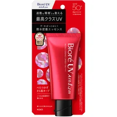
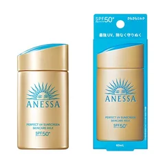
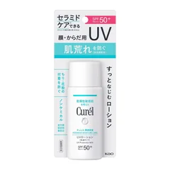
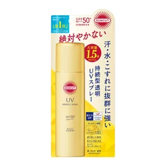

毎日さっぱり使いたい人

ビオレ
UV アスリズム プロテクトエッセンス 70g
70g
¥1472税込・出典掲載価格
選び方と声
- 選ぶ条件：ドラッグストアでも買える定番で、毎日たっぷり使いたい人（汗や水をはじいて、さらさらを保つと書かれている）
- 塗り心地がよくベタつかない、サラッとして使いやすいという声
気になる声気になる点：焼けにくいという声と、普通に焼けたという声で分かれる。香りの好みと、肌荒れ・かゆみの声もある
販売価格・容量・送料はリンク先でご確認ください
THE COSME EDIT / 2026.10.25
動画と同じ写真・名前・順番で並べています。見出しは順位ではなく、選ぶ条件です。4つそろえる前提ではありません。毎朝日焼け止めを塗っているのに夕方に頬が熱い、と感じる人が、商品を替える前に、容器に書かれた使用量・顔の5か所に置いて一気にのばす塗り方・化粧水や乳液のあとに塗る順番・2〜3時間おきの塗り直しを見直す、という話を会話でまとめました。まずは買わなくてもできること（使用量を減らさない・5か所に置く・保湿のあとに塗る・水気を取って塗り直す）を試してから、自分に合う1つか2つだけ選んでください。ガールズちゃんねるの「本当に焼けない日焼け止め」「日焼け止めって信じてる？」などのトピから声を集め、使い方は資生堂・コーセー・花王の公開情報で確かめたものです。焼けない・シミが消えると約束する話ではありません。肌に合わないときは使うのをやめて、赤みやかゆみがひどいときは皮膚科へ。
04 ITEMS 動画で紹介した商品
動画では商品のほかに、使用量はメーカーで目安が違うので容器の表示を見ること、顔は5か所に置いて中指と薬指でなじませること、素顔のときは同じ量を重ねてファンデーションを使うなら一度塗りでよいこと、日やけで頬がほてったときは冷やす・こすらない・保湿すること、化粧水や乳液のあとに塗ること、外出の直前でなく朝のスキンケアの一環として塗ること、塗り直しは2〜3時間おきで水気を取ってから、手の甲・首・耳・生え際の塗り残しも話しています。
価格は出典掲載時のものです。楽天の現在価格とは異なる場合があります。

ビオレ
70g
¥1472税込・出典掲載価格
選び方と声
気になる声気になる点：焼けにくいという声と、普通に焼けたという声で分かれる。香りの好みと、肌荒れ・かゆみの声もある
販売価格・容量・送料はリンク先でご確認ください

アネッサ
60mL
¥3058税込・出典掲載価格
選び方と声
気になる声気になる点：乾燥を感じるという声と、値段が高いという声がある。ウォータープルーフは落ちにくいので、洗顔料をよく泡立てて洗い、落ちにくければクレンジングを使う（コーセーの公開情報）
販売価格・容量・送料はリンク先でご確認ください

キュレル
60mL
¥1760税込・出典掲載価格
選び方と声
気になる声気になる点：顔が少し白くなるという声。肌への影響や持ちの感じ方は分かれる。強い日差しの日は量を守って塗り直す
販売価格・容量・送料はリンク先でご確認ください

サンカット
90g
¥1078税込・出典掲載価格
選び方と声
気になる声気になる点：ベタつきを感じる、髪がテカりやすいという声がある
販売価格・容量・送料はリンク先でご確認ください
SOURCE & NOTES
集計期間：2026年10月25日に確認
価格は2026年10月25日に確認した税込価格です（掲載時点）。4品とも Amazon.co.jp が販売元の商品の価格です（アネッサは小型のデイセラム付きの組）。価格は変わることがあります。購入前にリンク先でご確認ください。見出しは選ぶ条件で、順位ではありません。